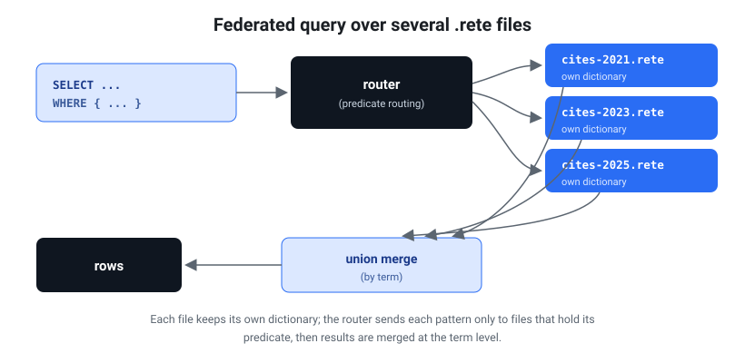

Federated queries across several .rete files
rete federate runs one SPARQL query across many .rete sources — local
file paths and/or http(s):// URLs, mixed freely — and merges the results. It is
the answer to "my data is sharded into several files; query them as one."
rete federate <source…> --query "<SPARQL>" [--json] [--no-route]
This is an honest prototype: it does union federation, not distributed
joins. Read Limitations before relying on it. (Federating with
a live SPARQL endpoint from inside a query is a different feature — the
SPARQL 1.1 SERVICE clause, covered in SPARQL support.)
The same union+routing federation is also available in the browser — the playground turns the SPARQL console into a multi-source one with a "+ Add source" button, each source range-queried lazily.
Why federation works at the term level

Every .rete file carries its own dictionary — the integer IDs that encode
terms are local to one file. ID 42 in cites-2021.rete and ID 42 in
cites-2024.rete are unrelated. So you cannot merge files by combining their
integer indexes.
Federation therefore works at the term (string) level: the query is
evaluated independently on each file with the existing single-file engine, and
the term-level result rows are merged. This is exactly correct for
sharded datasets where each file independently yields complete result rows —
the citation data below, sharded by citing year, is precisely this shape: each
cites edge (and its date/type) lives wholly within one year-shard, so each
shard produces whole, self-contained answer rows.
Merge semantics
| Query form | Merge across sources |
|---|---|
SELECT | Union of solution rows, deduped (identical rows collapse), stable order (source order, then within-source order). |
ASK | Logical OR — true if any source matches. |
CONSTRUCT | Union of constructed triples, deduped. |
Dedup is over the projected variables for SELECT * it is over all bound
variables. A row that appears in two shards (e.g. a node that cites the target
and shows up in two files) is reported once.
Routing / pruning (default on)
Before evaluating, federate reads each source's predicate set cheaply from
its pyramid summary — the (large) triple index is never touched (the same
"summary first" path used by rete predicates and rete summary-url). It also
extracts the concrete predicate IRIs the query constrains on (from the parsed
query's basic graph patterns and property paths). A source whose predicate set is
disjoint from the query's predicates cannot contribute a row and is
skipped.
--no-routedisables pruning and queries every source.- A query that pins no concrete predicate (every pattern uses a variable
predicate, e.g.
?s ?p ?o) cannot be routed — all sources are queried. - A source with no summary cannot be inspected, so it is never pruned.
For local files routing reads a few hundred bytes per source; for URLs it issues a handful of HTTP range requests (header + dictionary + summary) — never the whole file.
Per-source diagnostics (rows contributed + time), the queried-vs-pruned tally, and the list of pruned sources are written to stderr the merged results go to stdout.
Limitations
This is a deliberately honest prototype — it is correct for sharded data and clear about what it does not do.
- Union only, no cross-file joins. A solution that needs a triple from file A
joined with a triple from file B (e.g.
?xfrom one shard joined to?yfrom another) will not be found. Each shard is queried in isolation. Cross-file joins need a term-level federated BGP engine that ships intermediate bindings between sources — future work. - Aggregates and
LIMITare per source, then unioned. A federatedSELECT (COUNT(*) AS ?n)returns one count per source (unioned), not a global sum andLIMIT 5over two shards can return up to 10 rows (5 from each). This keeps the prototype honest rather than silently wrong. Sum / cap client-side, or wait for a future--reducethat folds per-source aggregates. GROUP BYis likewise evaluated per source then unioned, so the same group key can appear once per shard.
Real example — OpenCitations, sharded by citing year
The repo ships a real dataset: citations of the AlphaFold paper
(<https://doi.org/10.1038/s41586-021-03819-2>), sharded by citing year into
data/opencitations/cites-<year>.rete. Each shard uses
<http://purl.org/spar/cito/cites>, <http://purl.org/dc/terms/date>, and
rdf:type. (Regenerate with python3 scripts/fetch_opencitations.py, then
for f in data/opencitations/*.nt; do rete build "$f" -o "${f%.nt}.rete"; done.)
Federated SELECT across two year-shards
rete federate data/opencitations/cites-2021.rete data/opencitations/cites-2024.rete \
--query 'SELECT ?citing WHERE {
?citing <http://purl.org/spar/cito/cites>
<https://doi.org/10.1038/s41586-021-03819-2> } LIMIT 5'
data/opencitations/cites-2021.rete: 5 row(s) in 3.6ms
data/opencitations/cites-2024.rete: 5 row(s) in 15.6ms
10 solution(s)
federated 2 source(s): 2 queried, 0 pruned (routing on); 10 merged result(s)
?citing=<https://doi.org/10.1001/jama.2021.15728>
?citing=<https://doi.org/10.1002/2211-5463.13301>
?citing=<https://doi.org/10.1002/2211-5463.13316>
?citing=<https://doi.org/10.1002/advs.202102592>
?citing=<https://doi.org/10.1002/advs.202103807>
?citing=<https://doi.org/10.1001/jamadermatol.2024.1126>
?citing=<https://doi.org/10.1001/jamaophthalmol.2024.3829>
?citing=<https://doi.org/10.1002/1873-3468.14811>
?citing=<https://doi.org/10.1002/1873-3468.14823>
?citing=<https://doi.org/10.1002/1873-3468.14836>
Note the per-source LIMIT caveat in action: LIMIT 5 yielded 5 rows from
each shard, so the union holds 10. The first five are 2021 citers, the last
five 2024 citers.
Routing in action — a predicate-disjoint shard is pruned
Add a source that uses a different predicate (here a shard whose only predicate
is rdfs:label, not cito:cites). The cites query prunes it without ever
reading its index:
rete federate data/opencitations/cites-2021.rete other-demo.rete data/opencitations/cites-2024.rete \
--query 'SELECT ?citing WHERE {
?citing <http://purl.org/spar/cito/cites>
<https://doi.org/10.1038/s41586-021-03819-2> } LIMIT 3'
data/opencitations/cites-2021.rete: 3 row(s) in 3.4ms
data/opencitations/cites-2024.rete: 3 row(s) in 15.8ms
6 solution(s)
federated 3 source(s): 2 queried, 1 pruned (routing on); 6 merged result(s)
pruned (predicate-disjoint): other-demo.rete
…
--no-route would instead query all three (the label-only shard contributing 0
rows). For year-shards that all share cito:cites, routing keeps every shard —
pruning helps when sources are heterogeneous (different predicates per file),
which is the common federation case.
ASK federation (logical OR)
rete federate data/opencitations/cites-2017.rete data/opencitations/cites-2024.rete \
--query 'ASK { ?x <http://purl.org/spar/cito/cites>
<https://doi.org/10.1038/s41586-021-03819-2> }'
# → true (at least one shard has a citation)
URL sources
Sources may be http(s):// URLs of .rete files hosted on R2, S3, or any
direct origin that honors HTTP Range requests — mix them with local paths freely:
rete federate \
https://data.graphplaza.com/worldcup2026/worldcup2026.rete \
data/opencitations/cites-2024.rete \
--query 'SELECT ?citing WHERE { ?citing <http://purl.org/spar/cito/cites>
<https://doi.org/10.1038/s41586-021-03819-2> }'
Each URL is opened with range reads (header → dictionary → index → pyramid),
never a full download both routing and evaluation fetch only the bytes they need.
The release catalog pins its public R2 objects in web/datasets.lock.json; the
catalog audit also verifies that every shard is stable format generation 1 and
exposes Content-Range to browser CORS callers.
In the playground
The playground brings the same federation to the browser: federation is a kind of SPARQL, so it lives in the SPARQL console rather than a separate mode. Under the query editor a Sources strip shows the current dataset; a + Add source button federates with another source three ways:
- From catalog — any registered dataset (a remote one is range-queried lazily; a bundled one is queried in memory);
- .rete link — a pasted remote URL, range-queried lazily;
- SPARQL endpoint — a live endpoint (
SELECT/ASK) over the SPARQL protocol, subject to the endpoint's CORS policy.
Running with two or more sources fans the same query out to each and merges
with the exact CLI semantics above — SELECT union+dedup, ASK OR, CONSTRUCT
triple-union — and a per-source banner reports the rows and bytes each source
contributed. Each source keeps its own lazy reader, so two remote .rete files
are read independently and lazily into one merge; it is orchestrated in the
playground's JS over the existing single-source query paths, so no extra engine
code runs. An example can pre-load its partner with one click. A live line ticks
during the query — N/M sources answered · range requests · MB · elapsed — so a
long multi-source fan-out isn't a silent spinner.
Beyond union — cross-source joins and sharded datasets
The playground goes past the CLI's union: it also does a term-level cross-source JOIN — one BGP split across sources and joined on the shared variables — so the "cross-file join is not found" limit above is a CLI limit, not a playground one. Each triple pattern is routed to a source by its predicate (and by where its subject was bound), each source answers its own sub-pattern with the join keys already narrowed down, and the partial rows are joined in the browser. Queries that can't be split this way (OPTIONAL / UNION / aggregates / property paths) fall back to the union path. So e.g. USTC editions ⋈ the Embassy books they cite, joined on the book IRI, returns real joined rows across the two files.
A sharded dataset is registered as one logical graph with a shards: [url0, url1, …] list in the catalog; the playground treats url0 as the primary and the rest as
intrinsic federation partners, so every query auto-fans across all shards (union)
and the rows merge — you query it like one dataset (a "⛓ N shards" chip shows in the
Sources strip). This is how a graph too big to build as a single file — e.g. a 600 M-
triple Wikidata split into six independent --no-pyramid shards — is served and queried
as one. The path to a bigger graph is just more shards.
Worked example — resolve five terms across two ontologies. The bundled
chebi-full (the complete ChEBI ontology, 8.83 M triples) and chemotion (a
chemistry ELN graph merged with CHMO + RXNO) share CHEBI_* IRIs plus
rdfs:label/rdfs:subClassOf, but neither resolves every label. Pick either
dataset, open its Federation example (it adds the other as a second source),
and run:
PREFIX rdfs: <http://www.w3.org/2000/01/rdf-schema#>
PREFIX obo: <http://purl.obolibrary.org/obo/>
SELECT ?term ?label WHERE {
VALUES ?term { obo:CHEBI_15377 obo:CHEBI_27732 obo:CHMO_0000228 obo:BFO_0000015 obo:CHEBI_23367 }
?term rdfs:label ?label
}
chebi-full answers water / caffeine / molecular entity; chemotion
answers spectroscopy / process; the union resolves all five. The result line
shows the per-source split — no single file has all the answers.